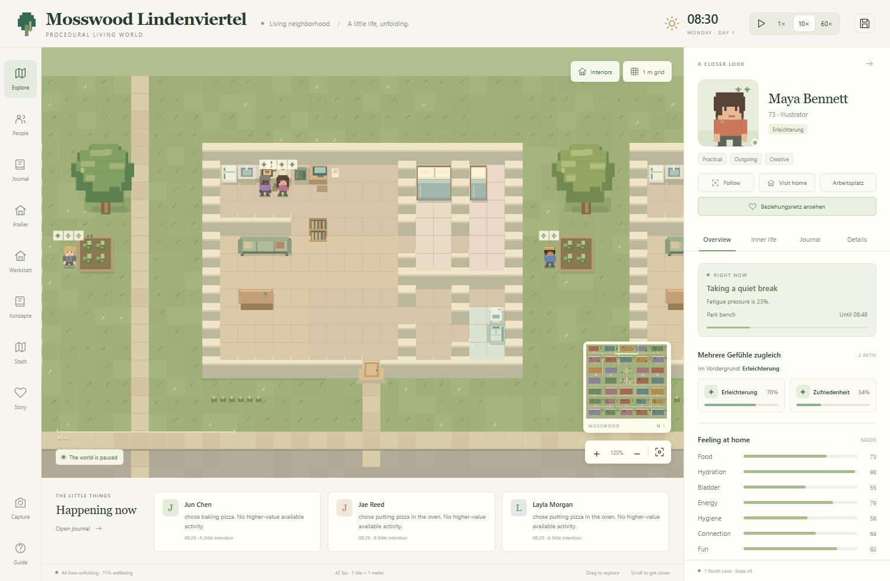
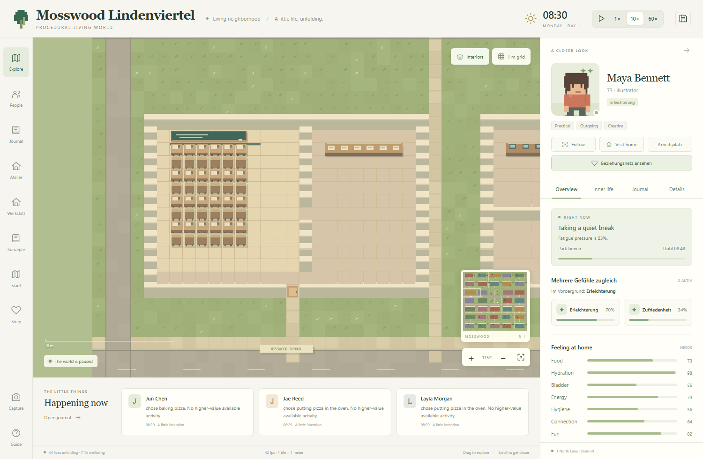
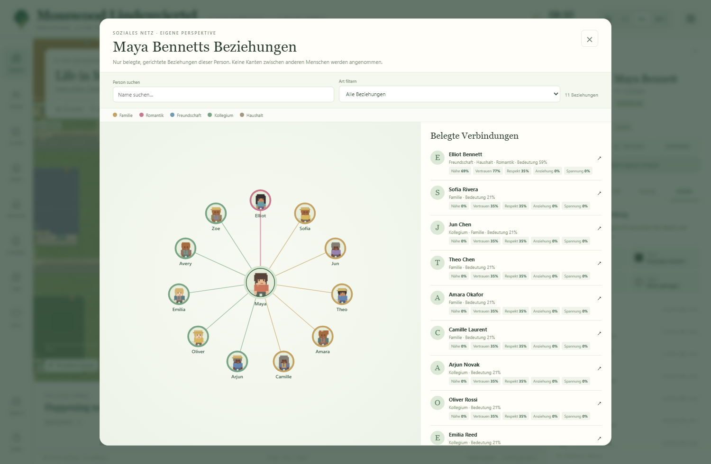
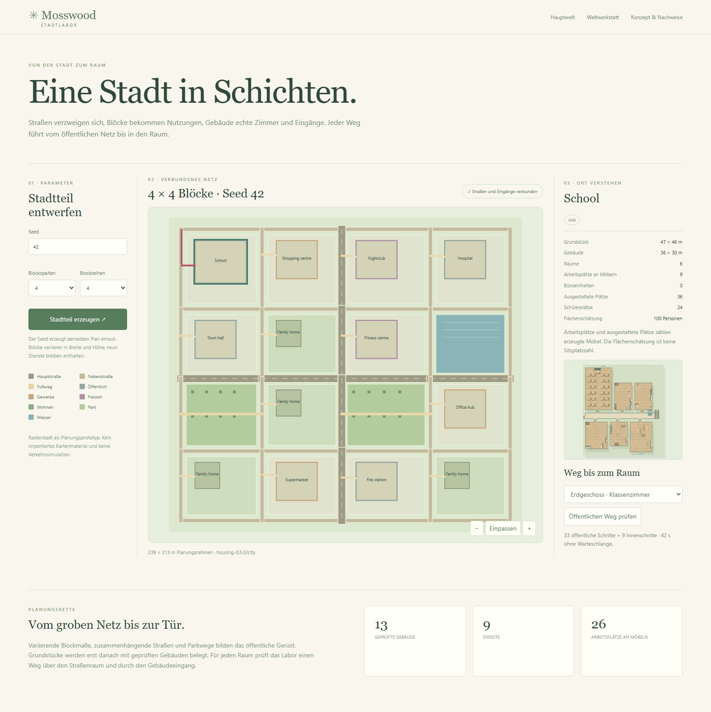

Procedural Living World · Ergänzung 03 · 29. September 2026
Ein Gefühl hat Gründe. Ein Ding hat einen Ort.
Implementiertes Konzept für mehrschichtige Gefühlszustände, persönliche Deutungen, gerichtete Beziehungen, konkrete Alltagsgegenstände und hierarchische Stadtplanung. Weiterhin vollständig prozedural, ohne Sprachmodell im Simulationskern.
Der aktuelle Stand
SIMULATION · RULES 3.0.0
44 Bewohner, 20 Haushalte
Python-Kern mit Ereigniswarteschlange und nachvollziehbarem Beat-Protokoll. Die alte Karte mit 365 festen Objekten bleibt erhalten; das Lindenviertel hat einen eigenen gespeicherten Grundriss. Tragbare Instanzen werden separat geführt.
KATALOG ≠ TRIGGER
40 benannte Emotionen
Der vollständige EmoNet-Face-Namenskatalog ist registriert. Nur durch implementierte Ereignisregeln belegte Kategorien werden aktiviert.
LABOR + LAUFENDE WELT
Neun Dienstleistungstypen
Der Stadtgenerator bleibt ein unabhängiges Labor. Das bewohnte Lindenviertel integriert 13 öffentliche und gewerbliche Gebäude zwischen seinen Wohnbereichen.
Der eigene Spielstand data/mosswood-lindenviertel-20260929.sqlite3 verwendet Seed 73 und neighborhood-v1. Er beginnt nach 15 tatsächlich simulierten Morgenminuten, pausiert um 08:30. Keine künstlich nachträglich erfundene Tagesgeschichte und kein Überschreiben der älteren Datenbank.
Kürzere Alltagswege
20 Haushalte und 13 Dienste auf einer 128 × 180 Meter großen aktiven Karte. Schule, Arbeitsstätten und öffentliche Ziele liegen um zwei zentrale Grünbereiche. Durchgängige Querstraßen, Randverbindungen und Zwischenwege erschließen die Grundstücke.
Überprüfbare Nutzung
Alle 33 Eingänge und 546 Möbelanker sind erreichbar. Wege bevorzugen Gehwege gegenüber Abkürzungen über Rasen oder Fahrbahnen. Der Kern nutzt tatsächliche Wege, Reservierungen und Gegenstandspositionen.
Dauerhafte Geometrie
Terrain, Häuser, Hindernisse und Kartenmetadaten werden als Blueprint gespeichert. Ein Software-Update oder anderer Start-Seed verschiebt beim Laden keine Möbel oder Figuren.
Wohnungen besitzen getrennte Wohn-, Ess- und Schlafbereiche, eine 12 m² große Küche und ein 6 m² großes Bad. Drei-Personen-Haushalte haben ein zusätzliches abgeschlossenes Schlafzimmer. Einzel- und Doppelbetten bieten genügend tatsächliche Schlafplätze. Die Schule hat 24 Tisch-Stuhl-Paare in vier Reihen; die Krankenhausbetten und Arbeitsstationen sind echte räumliche Objekte.

Ein bewohnter Familiengrundriss aus dem neuen Spielstand.

24 physische Schülerplätze. Schulbesuch von Kindern ist noch nicht simuliert; die aktuelle Bevölkerung besteht aus Erwachsenen.
Das aktive Lindenviertel ist ausdrücklich eine bewohnte Erdgeschosskarte. Mehrstöckige Gebäude mit Treppen-/Aufzugnavigation stehen weiterhin im separaten Atelier zur Verfügung. Die Straßen sind verbunden, aber sichtbar rasterförmig; organische Straßenverläufe, Verkehr und automatische Übernahme beliebiger Stadtlaborpläne sind noch nicht integriert.
Einfacher Start unter Windows: Start Lindenviertel.bat. Bau- und Navigationsvertrag: neighborhood_design.md. Niemals zwei Server gleichzeitig für dieselbe Datenbank starten.
Zusätzlich gehärtet: Gefühlsursachen laufen einzeln ab, höchstens sechs Komponenten je Gefühl. Eine Toilette oder bloßes Warten erzeugt keinen automatischen Stolz mehr. Bei einem Schreibfehler pausiert die Simulation und kehrt zum letzten dauerhaften Checkpoint zurück. Die zuletzt ergänzten Schutzmaßnahmen gegen vollständigen SQLite-Rollback und gegen die gegenseitige Unterbrechung kritischer Bedürfnisse sind implementiert und getestet. Der bereits laufende Vorschauprozess lädt diese letzten Engine-Korrekturen jedoch erst bei seinem nächsten Neustart; der automatische Neustart wurde von der Werkzeugrichtlinie verhindert. Die neue Karte, Story-Systeme und statischen UI-Änderungen sind bereits sichtbar.
1 · Ursachen und Selbstgeschichte
Ein Sim besitzt mehrere aktive Zustände mit stabiler Kategorie-ID, Intensität von 0 bis 1, Zeitgrenze und einem oder mehreren belegten Auslösern. Die stärkste aktuelle Intensität bestimmt das Hauptgefühl, ohne die anderen zu löschen. Beobachten verändert keine Zustände.
Zum Beispiel: eine erfolgreich abgeschlossene romantische Interaktion und eine gleichzeitig sehr dringende Blase. Beide Ursachen bleiben mit Ereignis-ID erhalten; Zuneigung und Bedrängnis können nebeneinander bestehen.
EIGENE DEUTUNG
Was der Sim daraus macht
Eigene Big-Five-Werte beeinflussen die textuelle Interpretation. Ein zurückhaltender Sim kann ein tatsächlich positives romantisches Gespräch als „vielleicht nur freundlich“ relativieren. Diese Deutung ersetzt keine Fakten und unterstellt dem Gegenüber keine Gedanken.
Die Narration ist eine deterministische Textvorlage, kein Sprachmodell und keine klinische Psychologie. Neuberechnung erfolgt an Handlungsgrenzen. Die Leseprojektion filtert abgelaufene Zustände; ihre aktuelle Selbstdeutung wird aus eigenen Zuständen erzeugt. Es gibt bisher keinen eigenständigen langfristigen Verdrängungs- oder Erinnerungsverfälschungsprozess.
Kein „Relief“ allein aufgrund eines erfundenen Ereignisnamens.
Die Taxonomie stammt aus LAION-AI / EmoNet-Face, genauer guide.json, abgerufen am 29.09.2026. Übernommen sind Kategorienamen und Gruppierungen, keine Gesichtsbilder und kein Emotionserkennungsmodell. Eigene deutsche Labels dienen nur der Anzeige. Herkunft und Hash stehen in affect_design.md und im JSON-Katalog.
2 · Bekanntheit ist gerichtet
Die persistierten Beziehungsdaten unterscheiden Haushalt, Verwandtschaft, romantischen Status, Freundschaft und Zusammenarbeit. Nähe, Vertrauen, Respekt, Anziehung und Spannung sind getrennte Dimensionen. Eine gerichtete Kante sagt etwas über die Perspektive des betrachteten Sims aus, nicht über die Gedanken des anderen.
Die Bedeutung ist eine abgeleitete, reproduzierbare Anzeigegröße, kein zusätzlich versteckt trainiertes Modell. Begegnungen und explizite Beziehungsschichten bestimmen, wer als bekannt gilt. Nur beobachtete, noch nicht bekannte Personen werden getrennt aufgeführt.
Der Beziehungsdialog zeigt ein Ego-Netz, Such- und Typfilter sowie eine zugängliche Personenliste mit den fünf Qualitäten. Es werden keine Kanten zwischen zwei fremden Sims erfunden. Das Charakterfenster zeigt größere Pixelporträts, getragene Kleidung und Emotionssymbole.

Browseraufnahme aus dem Lindenviertel: eigener Beziehungsgraph, Porträts aus real getragenen Outfits und einzeln lesbare Qualitäten.
Spieler-Inspektion und Agentenwissen sind verschiedene Schnittstellen: Der Spieler darf kanonische Ursachen betrachten. /api/bridge/{id}/context gibt dem Agenten nur seine Gefühls-Selbstdeutung und die bestehende begrenzte Perspektive; keine Ursachenliste oder privaten Zustände anderer Figuren.
3 · Kleine Dinge, wirkliche Zustandswechsel
Kühlschrank→Zutaten in der Hand→Vorbereiten→Ofen · 900 s→Herausnehmen→Tisch→Essen & aufräumen
Jede konkrete Instanz hat id, owner_id, kind, location und state. Erlaubte Orte sind getragen am Körper, mitgeführt, in einem Behälter oder verbraucht. Ein Objekt kann nicht gleichzeitig in Ofen und Hand liegen. Der Ofen ist vorerst ein Teil der vorhandenen Küchenarbeitsstation.
Pizza
Teig, Tomate und Gemüse werden aus abstraktem Kühlschrankvorrat instanziiert. Vorbereiten verbraucht die Zutaten und erzeugt eine rohe Pizza. Ihre ID bleibt beim Backen, Transportieren und Servieren erhalten.
Pfannkuchen
Ei und Teig werden zu Teigmasse und anschließend zu einer gegarten Mahlzeit. Beide Rezepte haben geprüfte Vorbedingungen; fehlender Vorrat löst Einkauf und Auffüllen aus.
Kleidung
Je zwei Oberteile, Hosen, Schuhe und Außenkleidungsstücke bilden die erste Garderobe. Wechseln ist eine räumliche Handlung. Porträt und Kartenfigur lesen dieselben tatsächlich getragenen Instanzen.
Die Engine prüft Vorbedingungen bei Beginn und Abschluss, reserviert die Interaktionsstelle und schreibt alle Änderungen gemeinsam in ein Ereignis. Konkretes Essen vermindert Hunger erst bei der atomaren Verbrauchsbuchung, damit Abbrechen kein kostenloses Essen erzeugt. Aufräumen kann die Verwahrung eines fremden Tellers übernehmen, ohne dessen Eigentümer umzuschreiben.
Prototypgrenzen: Vorräte vor der Entnahme bleiben Zähler; Abfall ist teilweise noch abstrakt. Kein freies Drag-and-drop beliebiger Dinge, kein Gewichtssystem, keine Verderblichkeit oder vollständiger Rezepteditor. Im aktuellen Zustand bleiben höchstens 64 verbrauchte Instanzen pro Verwahrer; das Ereignisprotokoll bewahrt die frühere Geschichte.
4 · Vom Stadtteil bis zum Arbeitsplatz
Region / Parameter→Straßen & Zonen→Grundstück→Gebäudeprogramm→Räume→Objekte & Interaktionsplätze
Das separate Stadtlabor nutzt reproduzierbare Seeds und einen Rahmen von 4–5 mal 4–5 Blöcken. Blockbreiten und -höhen variieren; Haupt-, Neben- und Fußwege bilden ein verbundenes öffentliches Netz. Zwei Parkblöcke und ein Wasserblock bleiben unbebaut. Jedem bebauten Grundstück ist ein realer Anschluss an seine Haustür zugeordnet.
Ebene
Bereits implementiert
Nächster klar abgegrenzter Ausbau
Stadtstruktur
Verbundene orthogonale Straßen; Zonen, variable Blöcke, Grundstücke, Grün und Wasser.
Stadtlabor zählt tatsächlich erzeugte Arbeitsmöbel; Büroeinheiten separat. Laufende Welt weist Sims konkrete Stationen zu, zu denen sie gehen.
Arbeitsmarkt, Stellenbesetzung und Übernahme eines vollständigen Laborplans in die bewohnte Welt.
Navigation
Öffentlicher Weg → Grundstückseingang → Gebäudeeingang → Raum; bestehende Etagenwege im Gebäudegraphen.
Verkehr, Fahrzeuge, Kapazitätsplanung, große gestreamte Stadtregionen.
Kompatibilität: Bei der älteren legacy-Karte erfolgte die Erweiterung nur südlich ihrer ursprünglichen Grenze. Ihre alten Objekt-IDs 1–349 und Zellen nördlich von y=154 bleiben erhalten. Der separate Lindenviertel-Spielstand verwendet dagegen den oben beschriebenen neuen Grundriss. Freizeit-, Einkaufs- und vereinfachte Dienstleistungsbesuche sind reale Aktionen; ein Klinikbesuch simuliert keine medizinische Behandlung, und ein Feuerwachenbesuch noch keine Einsatzphysik.

Der Stadtplan und der Raumgenerator teilen einen überprüften Eingangsvertrag. Der Schulgrundriss enthält tatsächliche Tische und Stühle, nicht nur eine Kapazitätsbeschriftung.
5 · Erweiterungsverträge
Modul / Schnittstelle
Verantwortung
data/emotion_taxonomy.json affect.py
Stabile Namen und Herkunft; reine Bewertungs- und Projektionsfunktionen. Neue Gefühle benötigen belegte Auslöser, Ablaufregel und Tests.
possessions.py
Instanzen, Kleidungsplätze, Rezepte und reine Zustandsübergänge. Neue Gegenstände deklarieren erlaubte Orte und Interaktionen.
story_life.py engine.py
Ein autoritativer Schreiber: Reservierung, Revalidierung, atomare Patches, Migration, Invarianten und Replay.
urban_life.py generation/city.py
Laufende Tätigkeiten und Arbeitsplatzzuweisung getrennt vom experimentellen Stadtplan. Beide verwenden überprüfbare IDs und räumliche Anker.
GET /api/actors/{id} GET /api/actors/{id}/relationships
Charakterdetails einschließlich Gefühlen, Kleidung, Besitz und eigener gerichteter Beziehungen.
GET /api/emotions/taxonomy GET /api/items/actions
Maschinenlesbare Kataloge und Handlungskontrakte; keine Schreibrechte am Weltzustand.
POST /api/generation/city POST /api/generation/city/{session_id}/route
Isolierter Entwurf und konkreter Weg zu einem Raum. Begrenzter Sitzungsspeicher; keine Mutation des Hauptspielstands.
{"seed": 42, "columns": 4, "rows": 4}
// POST /api/generation/city
{"actor_id":"resident_001", "tab":"mind", "view":"home",
"overlay":"relationships", "width":1440, "height":1000}
// POST /api/capture
Erweiterungsagenten sollen weiterhin nur versionierte Kandidaten erstellen: Vorschlag → Schemavalidierung → räumliche und semantische Tests → Sichtprüfung → explizite Veröffentlichung. Ein erfolgreicher Test ersetzt keine Freigabe. Fremde Inhalte dürfen weder freie Python-Ausführung noch direkte Zustandsänderungen einschleusen.
Dezentrale Inhaltsarbeit ist kompatibel mit einer zentralen Simulationsautorität: stabile Namespaces, Abhängigkeiten, Inhalts-Hashes und getrennte Schreibbereiche verhindern konkurrierende Änderungen. Für spätere Geodatenimporte lautet der Vertrag: Herkunft/Lizenz + Gebäudeumriss + vermutete Nutzung + Unsicherheit. Fehlende Vorlagen werden als Bibliotheksanfrage markiert, niemals als beobachtete Gebäudedetails ausgegeben.
6 · Überprüfen statt behaupten
Die Testdateien prüfen reine Funktionen und tatsächlich ausgeführte Ereignisketten: gleichzeitige Gefühle, strukturierte soziale Ursachen, Auslaufen, unveränderte Leseansichten, Datenschutz der Agentenperspektive, konkrete Rezeptschritte, Bekleidung, räumliche Verbindungen, Backups und vollständigen Replay.
149 automatisierte Tests bestanden. Zusätzlich wurden die fünf abschließenden Speicherfehler-Tests und drei Spielstand-/Nachbarschaftstests gemeinsam erneut erfolgreich ausgeführt. Ein isolierter 24-Stunden-Lauf mit der neuen Karte und Seed 42 verarbeitete 11.898 Ereignisse, 3.554 abgeschlossene Handlungen und 11.790 Beats: keine verletzten Invarianten bei stündlicher Prüfung, exakter Replay. 130 Pizzen und 52 Pfannkuchen wurden konsumiert; alle 44 Sims wechselten ihr Outfit. Laufzeit einschließlich abschließendem Replay: 386,951 Sekunden. Das ist ein Headless-Engine-Test unter paralleler Prüflast, kein Browser-FPS-Benchmark.
Warum ein korrekter Replay noch kein gutes Verhalten beweist
Der zusätzliche 24-Stunden-Lauf mit dem tatsächlichen Spielstand-Seed 73 bestand zwar alle Dateninvarianten, erzeugte aber 20.736 Handlungsabbrüche bei nur 3.454 Abschlüssen. Der Vorher-Beleg bleibt unverändert in artifacts/lindenviertel/seed73-verification.json. Die Ursache wurde separat reproduziert: Gleichzeitig kritische Blase und Müdigkeit unterbrachen sich gegenseitig, bevor eine der Handlungen Entlastung schaffen konnte.
Die korrigierte Arbitration schützt eine kurze, bereits begonnene direkte Entlastung. Längere Handlungen wie Schlaf werden nach Abbau des behandelten Bedürfnisses unter 0,90 erneut geprüft; auch erst später kritisch werdende andere Bedürfnisse erhalten einen Timer. Fünf gezielte Regressionstests prüfen direkte Entlastung, weiterhin unterbrechbares Warten und beide späteren Schlafunterbrechungsfälle. Die Langzeitprüfung enthält nun zusätzlich stündliche Aktivitätszahlen und eine ausdrücklich heuristische Abbruch-/Abschlussquote; die Grenze 2,0 ist ein Alarm für Abbruchschleifen, kein wissenschaftliches Realismusmaß.
Abschlussprüfung des korrigierten Codes: 31 gezielte Engine-, Besitz-, Story-, Speicher- und Nachbarschaftstests bestanden. Der neue 24-Stunden-Lauf mit Seed 73 endet mit 3.451 Abschlüssen und nur noch 90 Abbrüchen statt 20.736. Er verarbeitete 11.585 Ereignisse und 11.536 Beats, bei stündlich fehlerfreien Invarianten und exaktem Replay. 123 Pizzen und 49 Pfannkuchen wurden konsumiert, 42 Sims wechselten Kleidung. Bericht: artifacts/lindenviertel/seed73-after-urgency-fix.json. Der pausierte Startspielstand wurde dafür nicht geöffnet oder vorgespult.
Abschließender Browser-Smoke: 10 von 10 Prüfungen bestanden, keine JavaScript-Seitenfehler. Graph-Klick, Enter und Leertaste wählen die richtige Person; die Leertaste im Dialog löst keine Zeitsteuerung aus. Suche, Escape, Besitzanzeige und Schließen funktionieren auch bei 390 Pixel Breite. Der längere Ortsname führte zunächst zu 434 Pixel Seitenbreite; die mobile Kopfzeile ist nun auf 390 Pixel begrenzt, ohne die Bedienelemente abzuschneiden. Bericht und Mobilaufnahme: artifacts/lindenviertel/ui-smoke.json und ui-mobile.png. Dieser gezielte Abschlussbericht ergänzt den früheren unvollständigen Browserlauf in artifacts/new_neighborhood/inspector-browser-verification.json. Weltzeit und Pause blieben während sämtlicher zehn Prüfungen unverändert.
Der vollständige Bericht liegt in artifacts/lindenviertel/verification.json, der Erzeugungs- und Wiederladebeleg in artifacts/lindenviertel/creation.json. Echte HTTP-Screenshot-Aufrufe für Schule und Beziehungsdialog sind in artifacts/lindenviertel/api-verification.json dokumentiert: beide PNGs wurden erzeugt, ohne die pausierte Weltzeit zu verändern. Aktuelle Browseraufnahmen liegen in artifacts/new_neighborhood/. Keine externen API-Keys nötig; der vorhandene Hauptspielstand wurde nicht ersetzt.
Bewusste Grenzen
Keine wissenschaftlich validierte menschliche Gefühls- oder Persönlichkeitsdiagnostik.
40 registrierte Kategorien bedeuten nicht 40 vollständig simulierte Lebensprozesse.
Kurze Selbstdeutungen sind Templates, noch keine langfristige narrative Identität.
Der Stadtplan bleibt eine orthogonale Planungsgrammatik, keine Rekonstruktion einer realen Stadt.
Einige Dienste benutzen deklarierte Ersatz-Raumprogramme. Wohnbevölkerung im neuen Labor und automatischer Import in die Hauptwelt folgen separat.
Neue Berufsprofile entstehen in neuen Welten. Eine Migration schreibt bestehenden Sims nicht rückwirkend neue Berufe oder Beziehungen zu.
Dieses Dokument beschreibt implementierte Verträge und kenntlich gemachte nächste Ausbaustufen. Änderungen am Simulationszustand werden weiterhin vom Python-Koordinator protokolliert, nicht von der Darstellung erzeugt.